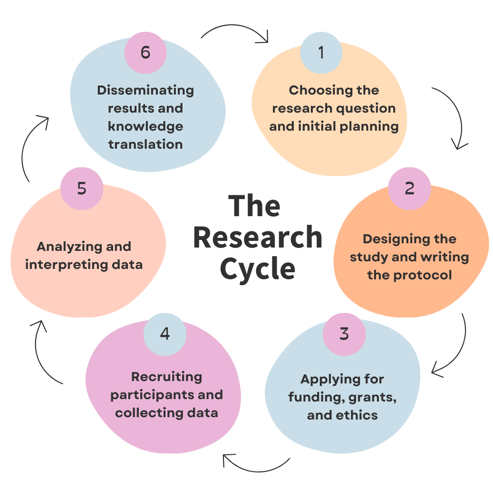
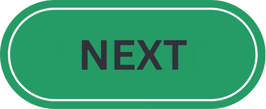

Patient and Family
Engagement in Research
A Guide For Researchers
Your project may be appropriate for patient engagement!
However, there are a few important things to reflect on first...
Please indicate which of the following you already have in place!
You'll be provided with resources tailored to your current readiness.
Patient and family engagement can be started at any stage of the research cycle!
Please select which stage best applies to your project:

